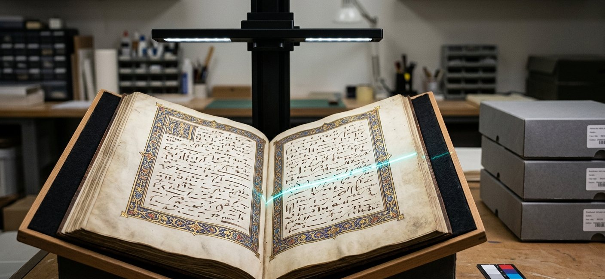

Training programme
Digital Preservation & Digitization of Manuscripts & Heritage
الحفظ الرقمي ورقمنة المخطوطات والتراث

A specialist workshop built on the trainer's experience and his book on digitising Arab heritage. It covers planning digitisation projects for manuscripts and heritage material, imaging and quality specifications, description, and long-term digital preservation policy under the OAIS model and trustworthiness standards.
1 Workshop objectives
- Plan a heritage digitisation project: objectives, priorities, resources, risk management
- Set digital imaging specifications (resolution, colour depth, formats, calibration targets)
- Establish safe handling procedures for manuscripts during digitisation
- Design the description and metadata structure (descriptive, technical, administrative, preservation) for heritage material
- Apply the OAIS model, long-term preservation policy and integrity verification
- Build an access plan that respects rights and the cultural sensitivity of the content
2 What the workshop covers
- The feasibility study, setting priorities and criteria for selecting material to digitise
- The digitisation lab: equipment, lighting, calibration, workspace control
- Quality specifications: FADGI/Metamorfoze, master files and use copies
- Handling and physical conservation of manuscripts during the project
- Metadata: MODS, METS, PREMIS, and manuscript description (TEI as an option)
- Digital preservation: OAIS, archival formats, integrity verification (checksums), migration
- Storage, multiple copies and disaster recovery plans
- Access: platforms, usage rights, cultural sensitivity, manuscript viewers (IIIF)
3 Learning outcomes
By the end of the workshop, participants should be able to:
- Produce a complete project plan for a heritage digitisation project
- Write a technical specification document for imaging and quality control
- Design a descriptive and preservation metadata template for heritage material
- Set out a long-term digital preservation policy with integrity verification procedures
4 Who it is for
- Curators of manuscripts and special and heritage collections
- Digitisation and preservation specialists in national libraries and archives
- Managers of heritage digitisation projects
- Researchers and staff in cultural heritage institutions
To book this workshop or have a version tailored to your institution
Request this workshop